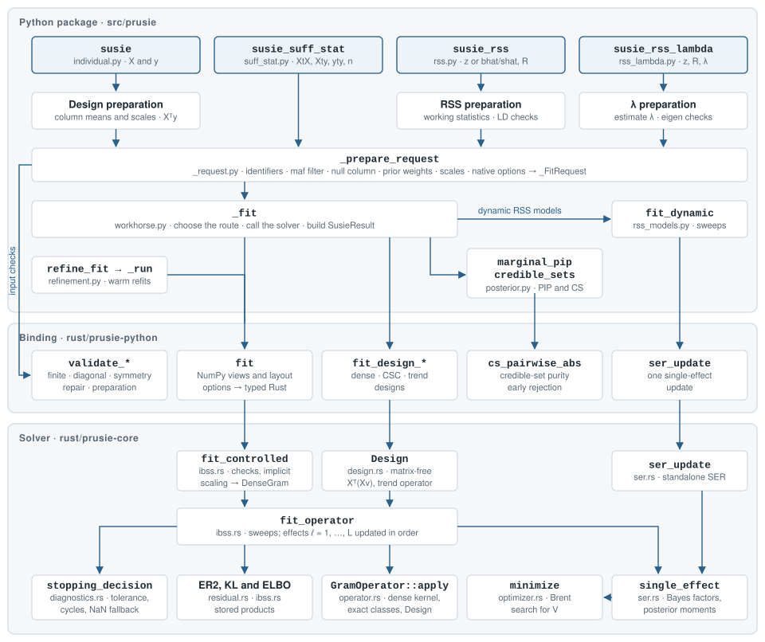

On this page
Implementation
prusie fits the SuSiE model through input preparation, single-effect
updates and posterior summaries. This page traces a fit from the public
functions to the returned SusieResult.
The Python package (src/prusie) checks inputs, prepares the model, chooses a
fitting route and assembles results. The Rust binding (rust/prusie-python,
imported as prusie._native) connects NumPy arrays to native routines and
checks native inputs. The solver crate (rust/prusie-core) implements iterative
Bayesian stepwise selection (IBSS) without a Python dependency.
The fitting routes include dynamic RSS models whose sweep loop runs in Python using native single-effect regression. Optimization describes the speed and memory methods.
Architecture


The shaded boxes at the top are fitting entry points. The left-hand path marks
native input checks during preparation. In workhorse.py, _fit dispatches the
prepared request, then adds PIPs and credible sets to the returned arrays and
diagnostics to construct a SusieResult. Retained-data continuation and
refinement call _native.fit directly through refinement._run;
Call paths describes these routes.
| Layer | Main modules | Responsibilities |
|---|---|---|
| Python entry points | individual.py, suff_stat.py, rss.py, rss_lambda.py, constructors.py, ser.py |
Prepare individual data, sufficient statistics or association summaries and LD; automatic and trend-filter fits; standalone single-effect regression (SER) |
| Python shared core | _request.py, workhorse.py, rss_models.py, posterior.py, result.py, refinement.py, _validation.py |
Construct fitting requests, dispatch fits, run dynamic RSS sweeps and build posterior summaries; continuation and refinement |
| Rust binding | lib.rs, options.rs, array_layout.rs, summary_helpers.rs, prepare_helpers.rs, design.rs, ser.rs, output.rs, executor.rs |
Check NumPy layouts and borrows; parse options; expose fitting, matrix preparation and purity routines; convert results and errors; own private execution resources |
| Rust solver | Main modules below | IBSS, SER, matrix operators, variance estimation, objectives and stopping rules |
Binding filenames refer to rust/prusie-python/src. The main solver modules
under rust/prusie-core/src are:
| Solver module | Contents |
|---|---|
ibss.rs |
Dense entry points fit_controlled and fit_controlled_with_executor; shared fit_operator sweeps, evidence lower bound (ELBO), variance updates and trimming |
ser.rs, optimizer.rs |
Gaussian and fixed-mixture SER, standalone ser_update and Brent prior-variance search |
residual.rs, diagnostics.rs |
Expected residual sum of squares (ER2), convergence metrics, stopping rules and cycle detection |
operator.rs, exact_columns.rs, activation.rs |
GramOperator, dense products, implicit scaling, exact signed-column classes and their activation rule |
design.rs |
Matrix-free operators for dense, sparse CSC and trend-filtering designs |
nig.rs, slot.rs |
Normal–Inverse-Gamma residual-variance model and effect-activity priors |
input_validation.rs, input_validation/ |
Finiteness checks, exact-symmetry proofs and paired RSS validation and repair |
execution.rs, parallel.rs |
Private execution resources, per-fit thread pools and partitioned matrix products |
vector_math.rs, numerical.rs |
Vector exponentials, compensated summation and digamma |
types.rs, options.rs, model.rs |
Options, model extensions and output types |
Fitting routes
susie, susie_suff_stat, susie_rss and susie_rss_lambda prepare a
_FitRequest through _request._prepare_request. workhorse._fit selects
among three numerical routes, checking for dynamic RSS before dense or design
fitting. Native entry names below belong to prusie._native.
| Route | Used for | Native entry | Sweep loop |
|---|---|---|---|
| Dynamic RSS | susie_rss with R_finite other than None or False, R_mismatch other than "none", or an R or X list/tuple of matrices; susie_rss_lambda |
ser_update for each effect update |
Python fit_dynamic |
| Dense | susie_suff_stat (susie_ss); remaining susie_rss fits with R |
fit |
Rust fit_operator, with DenseGram |
| Matrix-free design | susie, susie_trendfilter; remaining susie_rss fits with reference genotypes X, subject to the exception below |
fit_design_dense, fit_design_csc, fit_design_trend |
Rust fit_operator, with Design or TrendDesign |
With susie_rss(X=...), supplying bhat, shat and var_y builds a dense
correlation matrix before fitting. This selects the dense route unless a dynamic
RSS model is requested. Dynamic RSS recomputes working quantities during fitting
using NumPy matrix products and native SER; it also forms a dense Gram matrix
when supplied with reference X.
L_greedy adds an outer loop: _fit_greedy repeatedly calls _fit, increasing
the number of single-effect components and warm-starting from the preceding
result. Each fit uses the applicable route above. susie_auto runs staged
susie fits with warm starts.
The standalone susie_ser calls _native.ser_update once.
Call paths
These paths trace input preparation, fitting and result construction. The fitting routes determine which optional branches are used.
susie_rss
susie_rss rss.py
├─ argument checks; construct RSSControl
├─ R/X panel sequence → prepare_multipanel
│ panel fits → select initial LD panel by final ELBO → joint dynamic fit
├─ z, or z ← bhat/shat; missing z ← 0 with a warning
├─ reference X → _validated_design → _column_stats → _DesignData
│ bhat, shat and var_y → _design_correlation → dense R
├─ dense R → native validation and repair when required
├─ construct working statistics or retain the design
├─ enabled R_finite or R_mismatch → dynamic-model configuration
├─ _prepare_request → _FitRequest _request.py
└─ _fit workhorse.py
├─ init_only → SusieInputs
├─ L_greedy → _fit_greedy → repeated _fit
├─ dynamic → fit_dynamic → _native.ser_update
├─ design → _native.fit_design_dense | _native.fit_design_csc
├─ dense → _native.fit
├─ credible_sets; marginal_pip; convergence_summary
└─ SusieResult; optional refinement
susie
susie individual.py
├─ type checks; _validated_design
│ dense → F-ordered float64; sparse → canonical CSC copy
│ TrendDesign → retain implicit representation
├─ _column_stats → column means and centered sums of squares
├─ response, crossproducts, means and scales → _DesignData
├─ _prepare_request(XtX=None, ..., _design=design) → _FitRequest
└─ _fit workhorse.py
├─ _native.fit_design_dense | fit_design_csc | fit_design_trend
├─ credible_sets (member correlations computed from X); marginal_pip
└─ SusieResult with fitted values
Centering and scaling are applied through the design operator during fitting. The native design solver does not construct the full Gram matrix.
Inside the native fit
For a dense fit with the default Gaussian model, the native call reaches the shared IBSS loop as follows:
_native.fit prusie-python/src/lib.rs
├─ options::parse → FitOptions, FitControl
├─ check NumPy layout and borrow read-only views
├─ fit_controlled prusie-core/src/ibss.rs
│ ├─ check sizes, scalars and scale factors
│ ├─ implicit scaling, or a materialized working matrix
│ ├─ nonnegative working diagonal → DenseGram
│ └─ fit_operator
│ ├─ initialize posterior; rebuild products for a warm start
│ ├─ each sweep: update components in order
│ │ ├─ single_effect (optim method → optimizer::minimize)
│ │ ├─ compute component KL term
│ │ └─ GramOperator::apply → store component product
│ ├─ expected_residual_sum_squares; ELBO; convergence diagnostics
│ ├─ stopping decision; residual-variance update if no stop
│ └─ trim components below prior_tol
└─ output::fit_result → NumPy arrays, warnings and diagnostics
Rust source paths above are relative to rust/. The design entry points build
a Design or TrendDesign operator and call the same fit_operator. Mixture
and NIG fits use their corresponding SER routines inside that loop. The private
_fit_with_executor binding enters through fit_controlled_with_executor.
The binding keeps the Python global interpreter lock (GIL) during solver calls.
For _native.fit, the matrix and Xty read borrows also remain live until the
solver returns; the design bindings copy vector inputs into
Rust-owned buffers and borrow dense X.
Refinement, continuation and warm starts
For supported models, _prepare_request calls make_prepared when
retain_data=True, tracking, refinement or initialization requires a retained
context. PreparedData holds read-only input snapshots and a content signature.
continue_fit and refine_fit use refinement._run to call _native.fit on
these snapshots, then recompute PIPs and credible sets.
Continuation warm-starts from the saved posterior. For each candidate credible
set, refinement makes a cold-start fit with that set's prior weights set to
zero, then warm-starts a second fit from its posterior with the original weights
and initial variances restored. Each round accepts its best candidate only if the
last logged ELBO improves by more than RefinementConfig.absolute_tol.
Convergence and refinement describes the search controls.
The retained-data path excludes matrix-free designs, dynamic RSS, mixture, NIG
and slot priors, convergence_method="pip", L_greedy, and nondefault
median_abs_corr or cs_extension_corr. For these fits, plain refine=True
uses workhorse._refine_by_refitting to repeat _fit, except that multi-panel
RSS rejects refinement. retain_data=True and a RefinementConfig require a
supported model.
A warm-start mapping supplied through model_init or its alias s_init needs
alpha, mu and mu2; V and sigma2 are optional. initial_options checks
the posterior arrays and supplied variant IDs, allele labels, scales and
null-column layout. For a native warm start, Rust rebuilds all component matrix
products before the first sweep rather than resuming stored products.
Pseudocode
The fitting loop below follows the ordinary Gaussian model, with prior-variance and stopping options shown explicitly. Mixture, NIG and slot priors change the updates as described under Additional model options. Dynamic RSS uses its separate Python loop.
Preparation
Entry points first construct sufficient statistics or prepare a design operator.
From summaries to working sufficient statistics
gives the RSS constructions, including the internal sample-size placeholder
and disabled standardization when n is missing. Shared preparation and
fitting then proceed schematically as follows:
function _request._prepare_request(statistics or design, options):
validate statistics, identifiers, metadata, priors and controls
apply the requested MAF filter; add a null predictor if requested
normalize prior weights; resolve the component count
obtain predictor scales and the working crossresponse
prepare a dense matrix with scale factors, a scaled matrix, or a design
prepare initial variances, convergence controls and any warm start
if supported and requested: retain read-only inputs and their signature
return _FitRequest
function workhorse._fit(request):
if init_only: return SusieInputs(request)
if L_greedy is set: return _fit_greedy(request)
output ← fit using the request's dense, design or dynamic route
emit output warnings; warn if not converged
sets ← credible_sets(output, correlation or design)
pip ← marginal_pip(output)
result ← SusieResult(output, pip, sets, diagnostics, …)
if requested: apply the supported refinement route
return result
IBSS
Use the working statistics , and defined in the
model, with variants, components and
sample size . The stored component product is
,
and is the fitted crossproduct.
Here contains posterior variant probabilities,
contains conditional effect means, and mu2 stores
conditional second moments. The normalized prior weights are ;
and are the prior and residual variances.
denotes float64 machine epsilon, and Q(v) denotes a
Gram-operator application.
function fit_operator(Q, g, s_y, n, options):
α_ℓj ← 1/p; μ_ℓj, μ2_ℓj ← 0
V_ℓ, σ² ← prepared initial variances
u_ℓ ← 0; f ← 0
if warm start:
load posterior and any supplied variances; rebuild u_ℓ and f
method ← estimate_prior_method if estimate_prior_variance else "none"
log_prior_j ← log(π_j + √ε)
for t = 1, …, max_iter:
for ℓ = 1, …, L in order:
f ← f − u_ℓ; r ← g − f
α_ℓ, μ_ℓ, μ2_ℓ, V_ℓ, lbf_variable_ℓ, lbf_ℓ ← single_effect(
r, diag Q, σ², V_ℓ, log_prior, method)
compute KL_ℓ from this SER posterior and its evidence
u_ℓ ← Q(α_ℓ ⊙ μ_ℓ); f ← f + u_ℓ
if check_prior: check V against scores using the current σ²
ER2 ← expected_residual_sum_squares(g, s_y, diag Q, α, μ, μ2, u)
ELBO ← −(n/2) log(2πσ²) − ER2 / (2σ²) − Σ_ℓ KL_ℓ
if ELBO is infinite: error
if ELBO is NaN and any of α, μ, μ2, V is nonfinite: error
decision ← stopping_decision(current sweep, changes, cycles, controls)
apply alpha-cycle averaging when required; record diagnostics
if decision ≠ continue: break
if estimate_residual_variance:
estimate ← ER2 / n; reject a nonpositive or nonfinite estimate
σ² ← clamp(estimate, residual lower bound, residual upper bound)
for ℓ with V_ℓ < prior_tol:
α_ℓ ← π; μ_ℓ, μ2_ℓ, lbf_variable_ℓ, lbf_ℓ, KL_ℓ, V_ℓ ← 0
return posterior, variances, ELBO history, f, diagnostics
If residual-variance estimation is enabled, its update also follows the final
allowed sweep when the stopping decision is still continue. Returned sigma2
can therefore differ from the value used for the last ELBO. Final trimming
does not recompute the stored ELBO or fitted crossproduct;
Results explains these quantities.
Single-effect regression
The Gaussian SER equations give the
Bayes factors and posterior moments. Both the prior-variance search and the
posterior use the smoothed log_prior prepared above. The sampling variances
are cached until changes. Bayes factors use a variance floor of
; posterior moments use the unfloored sampling variances.
function single_effect(r, diag Q, σ², V, log_prior, method):
b̂_j ← (1/Q_jj) r_j; s_j² ← σ²/Q_jj
logBF_j(V) ← Gaussian log BF using max(s_j², ε)
(zero if b̂_j or s_j² is nonfinite)
h(V) ← logsumexp(logBF_j(V) + log_prior_j)
if method = "optim":
candidate ← Brent search maximizing h(V) over log V ∈ [−30, 15]
if h(candidate) ≥ h(V): V ← candidate
if method ∈ {"optim", "simple"} and h(0) + check_null_threshold ≥ h(V): V ← 0
lbf_variable_j ← logBF_j(V); w_j ← lbf_variable_j + log_prior_j
weights_j ← exp(w_j − max_k w_k); total ← Σ_j weights_j
α_j ← weights_j / total; lbf ← max_j w_j + log(total)
for each variant j:
if r_j/Q_jj and s_j² are finite:
v_j ← V s_j² / (V + s_j²)
μ_j ← (v_j / s_j²) (r_j/Q_jj); μ2_j ← v_j + μ_j²
else: μ_j, μ2_j ← 0
if method = "EM": V ← Σ_j α_j μ2_j
reject nonfinite evidence or moments
return α, μ, μ2, V, lbf_variable, lbf
With method="none", the supplied variance is retained. EM updates the variance
after computing the posterior, so the returned evidence refers to the variance
used before that update.
Stopping rule
The native solver rejects infinite ELBOs before applying this decision. For a finite posterior state, the remaining logic is:
function stopping_decision(t, ELBO, ΔELBO, Δα, ΔPIP, cycle, controls):
if ELBO is NaN and criterion = "joint": return numerical_failure
if t < min_iter: return continue
fallback ← ELBO is NaN and criterion = "elbo"
pip_rule ← criterion = "pip" or (fallback and nan_elbo_pip)
posterior_stable ← Δα < alpha_tol and ΔPIP < pip_tol
objective_stable ← ELBO is finite and 0 ≤ ΔELBO < tol
if pip_rule: satisfied ← Δα < tol and ΔPIP < tol
else if criterion = "alpha_pip" or fallback: satisfied ← posterior_stable
else if criterion = "joint": satisfied ← objective_stable and posterior_stable
else: satisfied ← objective_stable
if satisfied: return converged
if cycle lag > 1 and (criterion ≠ "elbo" or fallback):
if pip_rule: return converged
return cycle_detected
return continue
is the change from the preceding sweep;
and are the maximum absolute changes in
their respective arrays. Cycle detection compares both arrays with earlier
states, using tol for the PIP rule and alpha_tol and pip_tol otherwise.
The largest lag is cycle_lag (default 5), and successful or cycle stops
require min_iter sweeps (default 2). A PIP-rule cycle stop averages alpha over
the cycle in the IBSS loop.
Preparation sets the internal nan_elbo_pip flag when no convergence is
supplied and the resolved ConvergenceConfig has default values. Other
NaN-ELBO fallbacks use the separate alpha and PIP tolerances. With a finite ELBO,
the ELBO rule records cycles without stopping. Stopping rules
describes PIP history, averaging and model-specific rule selection.
Dynamic RSS uses rss_models.fit_dynamic and also requires the estimated
mismatch-bias change to be at most tol before declaring convergence.
Its permitted ConvergenceConfig settings are described in the same reference.
Boundaries and exceptions
Input errors stop a call. A completed fit can still return converged=False;
its stopping record explains why.
Errors
Shape, range and option-combination checks raise ValueError. The binding also
converts Rust solver error messages to ValueError, preserving the message.
Explicit Python type checks raise TypeError, for example for invalid
standardize, slot_prior or convergence types. The SusieInputs mapping
returned by init_only=True accepts "data" and "params"; another key raises
KeyError.
Shared preparation and fitting emit RuntimeWarnings and retain their messages
in fit.warnings when a result is returned. Ordinary susie_rss adds its
collected input warnings to that list. Input warnings emitted directly by
susie_rss_lambda are not copied into it.
Input checks
For dense susie_suff_stat and ordinary susie_rss, matrices must have matching
dimensions, finite entries and nonnegative diagonals. Ordinary RSS does not
separately enforce a unit LD diagonal or entries in . The caller must
supply correctly scaled, signed LD with matching variant order and effect
alleles.
| Condition | Behavior |
|---|---|
| Unequal off-diagonal entries in the working matrix | RuntimeWarning; average with its transpose. Symmetry is checked exactly, without a tolerance |
check_input=True |
Add an eigendecomposition before standardization. Reject a negative eigenvalue at or below -r_tol; warn if the Xty projection check fails |
Missing (NaN) z-scores |
Replace with zero and warn; infinite z-scores raise ValueError |
Missing Xty entries |
Replace with zero and warn with check_input=False; reject with check_input=True. Infinite entries always raise ValueError |
| Effect estimates and standard errors | Require finite bhat and positive shat without missing values. Scalar shat and positive infinity are accepted; a finite bhat divided by infinite shat gives zero |
yty=0 in the ordinary Gaussian model |
Require Xty=0, an explicitly positive residual_variance and estimate_residual_variance=False |
For z-score RSS, the exact symmetry check applies after scaling to the working
XtX. With bhat, shat, n and var_y, the reconstructed XtX is always
averaged with its transpose. The resulting matrix is also checked for finite
entries and a nonnegative diagonal. These routes do not clip eigenvalues or
repair a matrix to be positive semidefinite.
For individual-level input, X must be finite and infinite y is rejected.
Missing y requires na_rm=True, which omits the corresponding rows.
Inputs gives the numerical and projection
checks; priors and zero-information columns
describes weight normalization, null columns and the component-count rules.
Numerical safeguards
Posterior weights are normalized after subtracting the largest log weight. This prevents exponential overflow without changing relative probabilities. For log weights , overflows in float64, whereas the shifted form does not:
A 60-digit decimal calculation gives 1000.313261687518; the first normalized weight is 0.731058578630.
In ordinary Gaussian SER, finite sampling variances are floored at float64 machine epsilon for log Bayes factors and the prior-variance objective. Posterior moments use the unfloored variances. Prior weighting uses , so a supplied zero weight can retain positive posterior probability. A zero working diagonal gives log BF zero and zero conditional moments; its location probability can remain positive. Single-effect regression shows these branches.
Gaussian SER rejects nonfinite evidence or conditional moments. Native IBSS
rejects an infinite ELBO. A NaN ELBO also raises an error if the posterior arrays
contain nonfinite entries; otherwise the stopping rules below apply. The native
residual-variance update rejects a nonpositive or nonfinite estimate before
constraining it by residual_variance_lowerbound and residual_variance_upperbound.
With check_prior=True, the native loop checks the component variances after
each sweep, using the current residual variance. Write
for the largest
absolute working score. Any raises ValueError with a
summary-statistic/LD consistency message. Zero-diagonal columns are excluded;
with no positive diagonal the bound does not reject a variance.
Brent's prior-variance search checks new trial objectives for finiteness and raises an error if its 1000-iteration limit is exhausted. Native slot-activity updates constrain log-odds to . Kernel eligibility and fallback rules are described in Optimization.
Convergence outcomes
The native IBSS loop reports these fit.convergence outcomes:
stop_reason |
converged |
Meaning |
|---|---|---|
criterion_satisfied |
True |
The selected rule accepted the fit, including an eligible PIP-rule cycle |
iteration_limit |
False |
The sweep limit was reached |
cycle_detected |
False |
An eligible alpha/PIP cycle at lag greater than one under "alpha_pip", "joint" or an ELBO fallback using separate tolerances |
numerical_failure |
False |
A NaN ELBO under "joint" |
An ELBO decrease larger than tol produces a warning and increments the decrease
count. The selected stopping rule still decides whether fitting stops. A NaN
ELBO with finite posterior arrays under "elbo" invokes a warned alpha/PIP
fallback at or after min_iter. With the internal nan_elbo_pip flag, this uses
the PIP rule and averages alpha over an accepted cycle. Otherwise it uses the
separate alpha_tol and pip_tol, and a longer cycle returns
converged=False without averaging. Stopping rule gives the
flag selection and decision order. workhorse._fit warns when the solver
returns converged=False, including the iteration count and stop reason.
Dynamic RSS has a separate Python loop and reports elbo_tolerance,
alpha_pip_fixed_point, alpha_pip_cycle_<lag> or max_iter.
Results explains how to read the
stopping record and returned posterior.
Trimming and output shapes
Final trimming resets components with : alpha to
the normalized prior weights, and V, moments, log Bayes factors and KL terms
to zero. Component rows remain in the result. Native IBSS leaves the stored
ELBO and XtXr unchanged; dynamic RSS constructs XtXr from the finalized
arrays. Results describes these phases.
With a null column, alpha, mu, mu2 and lbf_variable have one more column
than pip. During fitting, credible sets containing the null column are
rejected. If no credible set qualifies, PIPs are still returned. PIPs use
components with ; credible sets use the separate
fixed cutoff .
Native threading
n_threads sets a native thread limit for each call, from 1 to 32, with default
1. Public fitting functions use this option independently of
PRUSIE_NUM_THREADS. They do not change process-wide Rayon or BLAS settings.
NumPy matrix operations, including those in dynamic RSS, follow their own
BLAS threading settings.
With n_threads > 1, large dense Gram products use a private Rayon pool to
partition output rows. Each row retains its source-column accumulation order;
IBSS components are updated sequentially. Pool creation is skipped for one
thread or a matrix dimension below 1024. Product dispatch requires at least
1024 output rows and 1,048,576 matrix entries; a compact product formed from
exact signed-column classes uses its reduced dimensions for this check.
Matrix-free design operators and the dynamic RSS sweep loop are not
parallelized by n_threads. The fitting pool is local to the native call and
is dropped when that call ends.
For susie_rss with known n and var_y=None, eligible LD inputs can also use
parallel preparation for the sufficient exact-symmetry proof and owned
validation and repair. This requires n_threads > 1, at least 1024 variants
and a plain NumPy array with aligned, C-contiguous, native float64 storage
without dtype metadata. Eligibility is checked on normalized preparation inputs,
independently of solver and output controls.
Array subclasses, including memory-mapped LD, other dtypes and other layouts
prepare serially. The requested solver count is retained when preparation is
serial. overwrite_ld=True preparation is always serial; its storage contract
is described under Optional LD workspace.
Parallel preparation requires the optional GNU/Linux x86-64 native math shim;
portable-math builds use serial preparation. Read-only probes check the caller
and every worker for nearest rounding, masked exceptions, disabled subnormal
flushing (FTZ/DAZ) and the canonical x87 control word. Unsupported or nonstandard
controls select serial preparation; the probes do not change them. Sticky
exception flags can accrue on different threads, so equality of the complete
floating-point environment is not part of the result contract.
Preparation workers read the matrix under a native read borrow and make no Python calls. Owned repair partitions unordered matrix pairs into disjoint jobs; each job writes both orientations into a separate repair array using the same ordered scaled terms and average as serial preparation. The calling thread dispatches warnings and errors: raw validation errors take priority, and a symmetry warning precedes a deferred repair error.
The preparation owner explicitly joins its workers before later NumPy transformations or warning dispatch, including cleanup on exceptions. It stays out of result options and serialization; fitting creates a separate pool when eligible. A construction failure or recoverable task panic selects the complete serial validator after joining any workers and discarding partial output. A worker join failure prevents a successful result. These explicit preparation joins are separate from the fitting pool's ordinary drop lifecycle.
Numerical reproducibility
prusie uses float64 arithmetic. Summation order and math-library implementations
can differ from susieR, so results are compared numerically. Core comparisons
use pinned susieR 0.16.6 with matched inputs and fitting settings and report the
maximum absolute difference over the complete final alpha matrix, in the
original component and variant order. PIPs and other summaries are compared
separately. Computational compatibility
defines the comparison and probability-validity checks.
On native GNU/Linux x86-64 builds, the optional vector-math shim can evaluate SER
exponentials through glibc libmvec, using SSE2 or AVX2 according to library and
CPU support. Scalar exponentials are used when vector math is unavailable or
the caller's rounding or subnormal controls require them. The compile-time
portable-math feature disables this shim and uses scalar exponentials without
changing model settings. Bitwise equality across implementations or platforms
is not promised.
Numerical accuracy reports the tested configurations and results. Agreement on those cases does not establish agreement for every input, model option or platform.
Dense storage and matrix products
A dense float64 matrix for variants occupies bytes. Input conversion, symmetry repair and materialized scaling can each require additional full matrices.
At , bytes, or approximately 190.7 MiB.
RSS validation preserves the caller's R by default, using owned storage for
repair. For supported z-score inputs with R and known n,
susie_rss(overwrite_ld=True) can reuse R for repair. Once writes begin, later
errors can leave R and its aliases changed, with no rollback. Reload the
original LD before reuse, including after a failed call.
Optional LD workspace gives the restrictions.
A sufficient exact-symmetry proof can return without writes. Otherwise, a
read-only search must find finite original and scaled entries with unequal
scaled values before destructive repair starts. With no such pair, owned
preparation keeps R unchanged. Repair holds one mutable NumPy borrow under the
GIL and loads both original orientations before either store. With s = n - 1,
each pair receives (Rij*s + Rji*s)/2 in that operation order, using original
entries Rij and Rji. The traversal allocates no full backup or repair array.
Consumed R is scaled XtX with global scale 1; unchanged R retains global
scale .
The dense operator can apply RSS and predictor scaling without storing the working matrix. Outside the implicit-scaling bounds, it materializes that matrix once. If the ordinary factored product has a nonfinite intermediate or result, it is retried with a temporary materialized matrix.
Validation passes
Each full traversal of R reads bytes, about as much as one dense
product. The general validator checks finiteness, nonnegative diagonal entries
and exact symmetry in one traversal, comparing transposed pairs in tiles
without a temporary. For known- RSS it compares the scaled
entries and .
| Step | Applies when | Effect |
|---|---|---|
| Sufficient symmetry check | x86-64; ordinary RSS; contiguous R with diagonal within of one, entries of magnitude at most , exact symmetry and a non-overflowing multiplier |
Vectorized pair comparison; success skips the general traversal. Failure is not a rejection |
| Fused validation and repair | overwrite_ld=False; known n, var_y=None; plain, aligned, C-contiguous float64 NumPy R |
One traversal checks raw and scaled entries while filling a private repair buffer, kept only for asymmetric input |
| Separate traversals | Other inputs | Validation, then repair when required |
LD written by external tools often has rounding-level asymmetries, around
, that trigger repair and its buffer. overwrite_ld=True can then
repair in place instead.
Dense products
The column-major product kernel skips zero coefficients and adds columns in ascending order, grouping four nonzero columns per output update. On x86-64, runtime CPU detection selects AVX2 when available, with a portable fallback. Both builds perform the same sequence of separate float64 multiplications and additions. Exact signed-column classes can combine coefficients after proving column relations, keeping separate posterior coordinates for every variant. Native threading describes parallel product dispatch and sequential component updates.
Single-effect regression kernels
During a prior-variance search, each objective evaluation fills the log weights , exponentiates them after subtracting the maximum and sums them.
| Step | Applies when | Otherwise |
|---|---|---|
| Shared group terms | At most 16 distinct floored sampling variances | Per-variant formula |
| AVX2 log-weight fill, four variants at a time | Vector exponentials available, AVX2, equal prior weights, at most four groups | Scalar fill from the same group terms |
Vector exponentials (glibc libmvec) |
GNU/Linux x86-64, default rounding and subnormal modes, no portable-math |
Scalar exp |
| Balanced pairwise-tree sum of the weights | Always, in the search objective | — |
The tree sum passes each term through at most additions and reuses the evaluation's scratch storage. Posterior normalization and signed sums such as the ER2 dot products keep compensated summation.
Credible-set purity
_native.cs_pairwise_abs reads pair entries of a supplied matrix directly. With
min_abs_corr set and median_abs_corr=None, it returns at the first pair below
the threshold, before allocating the pair values of an -member set;
the set is recorded with purity_evaluation="threshold_short_circuit". Retained
sets receive complete minimum, mean and median purity.
Runtime and memory depend on the input, matrix structure, preparation, iterations and threads. Reducing temporary storage or adding threads need not reduce runtime.
Individual-level designs and imports
susie never forms . Each product is applied as
by the Design operator, with centering and
standardization folded in through column means and scales.
| Design | Work per product | Workspace |
|---|---|---|
Dense X |
||
Sparse CSC X |
||
susie_trendfilter, order |
by repeated cumulative sums |
A positive null_weight adds a virtual zero column. These products are serial;
n_threads does not apply to them.
import prusie loads only the fitting interface. The analysis, comparison,
ld, plots, report and viz modules, and the names they export, load on
first attribute access through the package __getattr__, so a fitting process
does not import SciPy or Matplotlib.
Reference source mapping
Use this mapping to compare input preparation and Gaussian IBSS updates with
susieR 0.16.6,
commit 8e56a8e038e989856d106d9ca5175cc664fea9d2. The table groups code by
responsibility; links to reference files point to this commit. Python filenames
are relative to src/prusie, and Rust filenames to rust/prusie-core/src.
| prusie | susieR 0.16.6 |
|---|---|
individual.py: susie; suff_stat.py: susie_suff_stat (susie_ss); rss.py: susie_rss; rss_lambda.py: susie_rss_lambda |
susie, susie_ss, susie_rss, susie_rss_lambda in R/susie.R |
Input preparation in the entry modules and _request.py: _prepare_request |
individual_data_constructor, sufficient_stats_constructor, summary_stats_constructor, rss_lambda_constructor in R/susie_constructors.R |
workhorse.py: _fit; ibss.rs: fit_operator |
susie_workhorse in R/susie_workhorse.R; ibss_fit in R/iterative_bayesian_stepwise_selection.R |
Component updates in ibss.rs; ser.rs: single_effect; optimizer.rs: minimize |
single_effect_update, single_effect_regression, optimize_prior_variance in R/single_effect_regression.R |
residual.rs: expected_residual_sum_squares; ELBO in ibss.rs |
get_ER2.ss, Eloglik.ss in R/sufficient_stats_methods.R; get_objective.default in R/model_methods.R |
diagnostics.rs: stopping_decision, detect_cycle |
check_convergence.default in R/model_methods.R; check_alpha_pip_cycle_convergence in R/susie_utils.R |
Residual-variance update and trimming in ibss.rs |
update_model_variance.default, trim_null_effects.default in R/model_methods.R |
The Brent search in optimizer.rs is adapted from Brent_fmin in R's
src/library/stats/src/optimize.c (GPL-2.0-or-later). Attribution and licenses
are retained in the third-party notices.